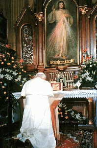
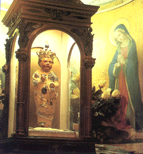

Two things are here to be determined; first, the practice of the Church of Rome as regards images; and, second, the judgment which the Word of God pronounces on that practice.
|
Pope John Paul II kneeling in prayer before the idol of Our Lady of Fatima |
Her practice, so far as pertains to its outward form, is as incapable of being misunderstood as it is of being defended. She sets up images which are representations of saints, or of angels, or of Christ; and she teaches her members to prostrate themselves before these images, to burn incense, and to pray before them, to undertake pilgrimages to their shrine, and to expect a more than ordinary answer to the intercessions offered before them. There is not a church in any Roman Catholic country throughout the world where this manner of worship is not every day celebrated; and, being open to all, no concealment is possible, and none is sought. The worshipper enters the cathedral, he selects the image of the saint whom he prefers, he kneels, he counts his beads, he burns his candle, and, it may be, presents his votive offering. As regards the letter of the practice of the Church of Rome, there is not, and there cannot be, any dispute. These facts being admitted, the controversy might here take end. This is what the Word of God denounces as image-worship; this it strictly prohibits; and this is enough to substantiate the charge which Protestants have brought against the Church of Rome as guilty of idolatry. Her practice in this point is manifestly a revival of the pagan worship in one of its grossest and most offensive forms. She, as really as the ancient idolaters, "worships the creature more than the Creator." But let us hear what Rome has to say in her own behalf.
She introduces the element of INTENTION, and on this mainly rests her defence. She pleads that she does not believe these images to be inspired with the Divinity,—she does not believe them to be gods. She pleads also, that she does not believe that the wood, or stone, or gold, of which they are composed, can hear prayer, or that the image of itself can bestow the blessings supplicated for; that she believes them to be only images, and therefore directs her worship and prayers past or beyond them, to the saint or angel whom the image represents. The Papist does not pray to, but through, the image. We accept this as a fair statement of what is the theoretic practice of the Church of Rome on the subject of images, but we reject it as a statement of what that practice is, in fact, and especially do we reject it as a defence of that practice. We do so for the following reasons.
In the first place, if the Papist is acquitted of idolatry on this ground, there is not an idolater on the face of the earth who may not on the same ground demand an acquittal. None but the most ignorant and brutish ever mistook the stock or stone before which they kneeled for the Creator. This representative principle, on which the image-worshipper of the Popish Church founds his justification, pervaded the whole system of the pagan worship. It was this which led the world astray at first, and covered the earth with a race of deities of the most revolting character. Whether it was the heavenly bodies, as in Chaldea, or a class of demigods, as in Greece and Rome, it was the great First Cause that was professedly adored through these symbolizations and substitutes. The vulgar, perhaps, failed to grasp this distinction, or steadily to keep it before them, just as the mass of worshippers in the Roman Catholic Church fail practically to apprehend the difference between praying to and praying before, or rather beyond, the image; but such was the system, and that system the Bible denounced as idolatry; and the same system stands equally condemned when found in a popish cathedral as when found in a pagan temple.
|  |
|
Pope John Paul II bowing down |
But, in the second place, it is not true that these images are simple helps to devotion, or mere media for the conveyance of the worship offered before them to the object whom they represent. The homage and honour are given to the image immediately, and to the object represented immediately, the worshipper assuming the power, by an act of volition or intention, of transferring the honour from the image to the object. But the image is honoured, and is commanded to be so on no less an authority than the Council of Trent. "Moreover," says the Council, "let them teach that the images of Christ, and of the Virgin, mother of God, and of other saints, are to be had and retained, especially in churches, and due honour and veneration rendered to them." And the decree goes on to say, that the person is to prostrate himself before the image, to uncover his head before it, and kiss it, no doubt under the pretence, that by these marks of honour to the image he is honouring those whose likeness it bears.1 This decree reduplicates on a former decree of the second Council of Nice, held in A.D. 787,2 at which the controversy respecting images was finally settled. The Council of Nice decreed that the images of Christ and his saints are to be venerated and adored, though not with "true latria," or the worship exclusively due to God.3 The same doctrine is taught in the Catechism of the Council of Trent. There such acts of worship as we have already specified are recommended to be performed to images, for the sake of those whom they represent; and it is declared that this is highly beneficial to the people, as is also the practice of storing churches with images, not for instruction simply, but for worship.4 If, therefore, we find the divines of the Romish Church not adhering to their own theory, but blending the image and the object in the same acts of adoration, if we find them expressly teaching that images are to be worshipped, though not with the same supreme veneration that is due to God,—how can we expect that this distinction should be observed by the people?
|  |
|
The Bambino |
By the mass of the people this distinction is neither understood nor
observed: the image is worshipped, and nothing more. That is their deity; and
in not one in a thousand cases do the thoughts or intentions of the worshipper
go beyond it. Why, out of several images of the same saint, does the
worshipper prefer one to the others? Why does he make long pilgrimages to its
shrine? Why, but because he believes that a peculiar virtue or divinity
resides in this his favourite image. This shows that it is more to him than
simple wood and stone. There could not be grosser or more wholesale idolatry
than the festival of the Bambino at Rome, as described by Seymour.5
 When the priest on the summit of the Capitol
elevates the little wooden doll which represents the infant Saviour, the
thousands that cover the slope and bottom of the mount fall prostrate, and
nothing is heard but the low sounds of prayer addressed to the image. The Rome
of the Caesars never witnessed a more idolatrous spectacle. It is firmly
believed that the image possesses miraculous powers; the priests take care to
encourage the delusion; and not a day passes without an application for a
cure. There are numerous images at Rome believed to possess the power of
working miracles. Among the rest is that of Mary in S. Maria Maggiore. This
picture was carried in procession through the streets of Rome to suppress the
cholera, the Pope (Gregory XVI.) joining barefooted in the procession.6 And what, we may ask, is the
change which the Papist believes passes upon the image in the act of
consecration? Is it not this, that where as before it was simply a piece of
dead and inefficacious matter, it has now become filled or inspired with the
virtue or divinity of the object it represents, who is now mysteriously
present in it or with it?
When the priest on the summit of the Capitol
elevates the little wooden doll which represents the infant Saviour, the
thousands that cover the slope and bottom of the mount fall prostrate, and
nothing is heard but the low sounds of prayer addressed to the image. The Rome
of the Caesars never witnessed a more idolatrous spectacle. It is firmly
believed that the image possesses miraculous powers; the priests take care to
encourage the delusion; and not a day passes without an application for a
cure. There are numerous images at Rome believed to possess the power of
working miracles. Among the rest is that of Mary in S. Maria Maggiore. This
picture was carried in procession through the streets of Rome to suppress the
cholera, the Pope (Gregory XVI.) joining barefooted in the procession.6 And what, we may ask, is the
change which the Papist believes passes upon the image in the act of
consecration? Is it not this, that where as before it was simply a piece of
dead and inefficacious matter, it has now become filled or inspired with the
virtue or divinity of the object it represents, who is now mysteriously
present in it or with it?
But, in the third place, though this distinction were one that could be easily drawn, and though it could be shown that it always is clearly drawn by the worshipper, and though it could be shown also, that all the good effects which have been alleged do in point of fact flow from this practice, all this would make nothing as a defence. The Word of God denounces the practice as idolatrous, and plainly forbids it. The condemnation and prohibition of this practice form the subject of one entire precept of the Decalogue. "Thou shalt not make unto thee any graven image, or any likeness of anything that is in heaven above, or that is in the earth beneath, &c.; thou shalt not bow down thyself to them, nor serve them; for I the Lord thy God am a jealous God."7 Till these words are revoked as plainly and solemnly as they were promulgated,—till the same mighty voice shall proclaim in the hearing of the nations that the second precept of the Decalogue has been abrogated,—the practice of Rome must stand condemned as idolatrous. The case, then, is a plain one, and resolves itself into this, Whether shall we obey Rome or Jehovah? The former, speaking from the Seven Hills, says, "Thou mayest make unto thee graven images, and bow down thyself to them, and serve them:" the latter, speaking in thunder from Sinai, says, "Thou shalt not make unto thee any graven image…thou shalt not bow down thyself unto them and serve them." Rome herself has confessed that these two commands,—that from the Seven Hills and that from Sinai,—are eternally irreconcilable, by blotting from the Decalogue the second precept of the law.8 Alas! Will this avail her aught so long as that precept stands unrepealed in the law of God? May God have mercy upon her poor benighted people, whom she leads blindfold into idolatry; and may He remember this extenuation of their guilt when he arises to execute judgment upon those who, knowing that they who do such things are worthy of death, not only do them, but teach others to do the same!
1 Concil.
Trid. sess. xxv. [Back]
2 Mosheim, book
iii. part ii. chap. iii. [Back]
3 Cramp's Text
Book of Popery, p. 338. [Back]
4 Cat. Rom. part
iii. c. 2, s. 39, 40,—"Sed ut colantur."
[Back]
5 Seymour's
Pilgrimage to Rome, p. 288; Lond. 1851.
[Back]
6 Mornings among
the Jesuits, pp. 35-38. [Back]
7 Exod. xx. 4, 5.
Perrone contends that what the command forbids is the making of images to the
pagan deities, and not the making of them to Christ and the saints. Of course,
he is unable to produce any ground for this distinction. (Praelectiones
Theologicae, tom. i. p. 1209.) [Back]
8 In the ordinary
catechisms used by the Roman Catholics of this country, the second commandment
is expunged from the Decalogue, and the tenth is split into two, to preserve
the number of ten. [Back]
Source: The Papacy: Its History,
Dogmas, Genius, and Prospects by
Rev. J. A. Wylie, LL.D.,
Book Two: Dogmas of the Papacy, Chapter XVII.
 http://biblelight.net |